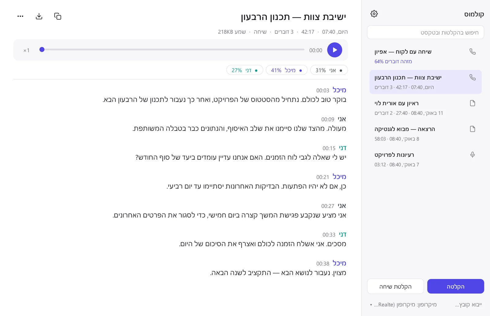
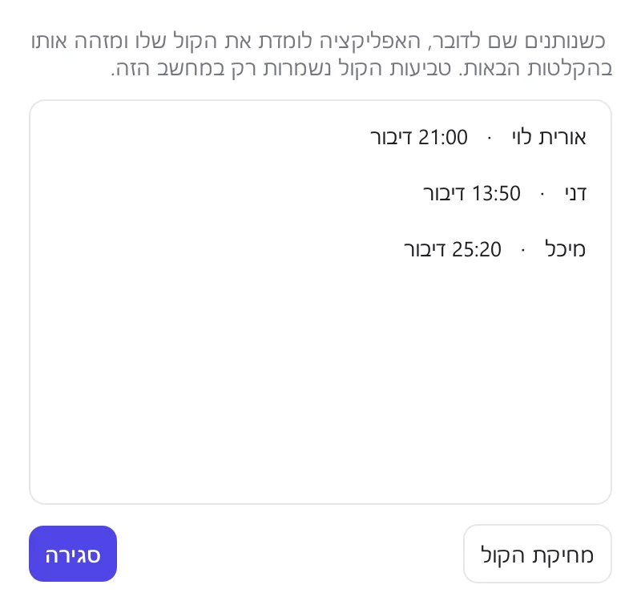
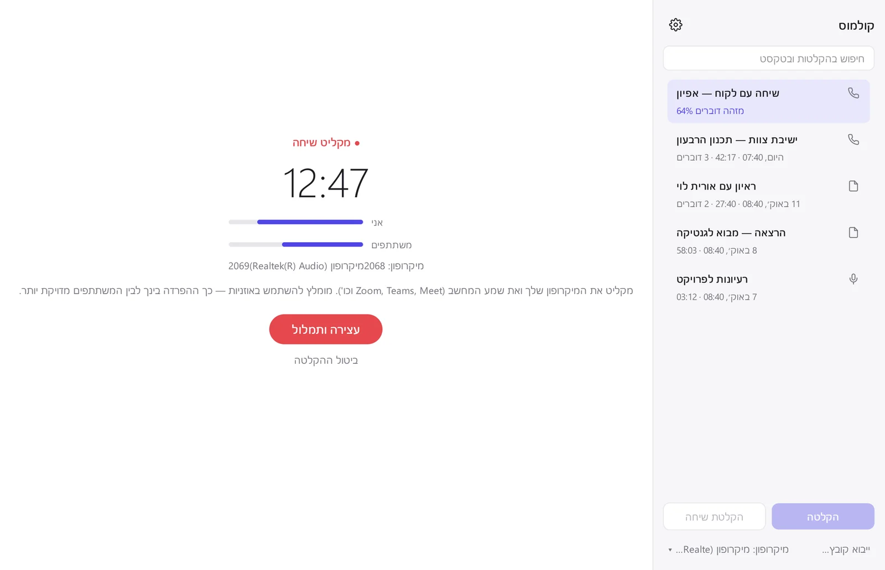
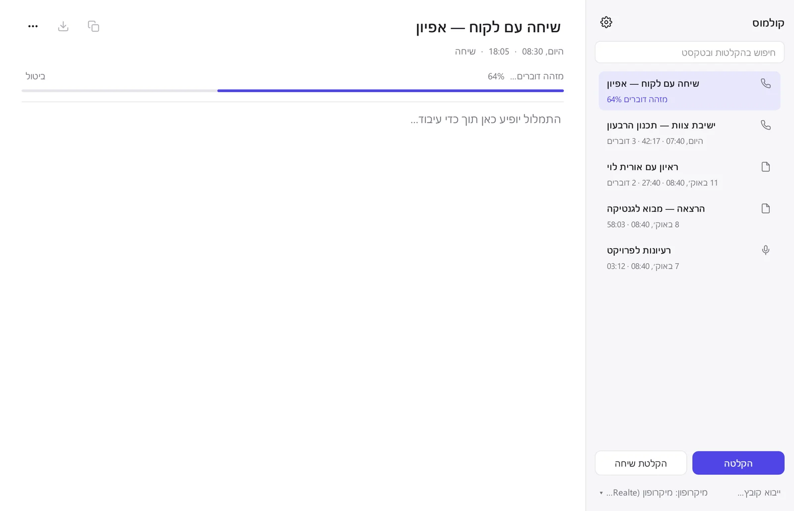

Windows
- מפעילים את קובץ ההתקנה (לא צריך הרשאות מנהל).
- אם מופיע "Windows הגן על המחשב", לוחצים "מידע נוסף" ואז "הפעל בכל זאת". זה קורה כי התוכנה חינמית ולא חתומה בתעודה בתשלום.
- בהפעלה הראשונה מחכים להורדת המודל.
קולמוס · כל מילה נכתבת
מקליטים פגישה, שיחת זום, ראיון או הרצאה, או גוררים קובץ שמע או וידאו, ומקבלים תמלול מחולק לפי דוברים. בלי אינטרנט, בלי מנוי, והשמע לא יוצא מהמחשב.

הקלטה מהמיקרופון, הקלטת שיחה (המיקרופון שלך ושמע המחשב), או גרירה של קובץ שמע או וידאו: mp3, m4a, wav, mp4 ועוד.
מודל העברית של ivrit.ai מתמלל על המעבד של המחשב ומפריד בין הדוברים. בינתיים אפשר להמשיך לעבוד, ואפילו להקליט שוב.
לחיצה על משפט מנגנת אותו. אפשר לחפש בכל ההקלטות, לתת שמות לדוברים, ולייצא לטקסט או לכתוביות.
פגישות צוות, ראיונות, שיחות עם לקוחות והרצאות, כולל דיבור טבעי, קטיעות ומונחים מקצועיים.
הטקסט מחולק לפי דוברים, עם שעה לכל משפט. נותנים שם לדובר פעם אחת, והאפליקציה לומדת את הקול שלו ומזהה אותו לבד בהקלטות הבאות.

לוחצים "הקלטת שיחה" לפני שהשיחה מתחילה. האפליקציה מקליטה את המיקרופון שלך ואת שמע המחשב בנפרד, כך שהיא יודעת מתי דיברת אתה ומתי המשתתפים. עובד עם כל אפליקציית שיחות, בלי תוספים.

כל ההקלטות והתמלולים נשמרים בתיקייה שבוחרים. העיבוד מתבצע ברקע ובתור, ואפשר למחוק רק את קובץ השמע אחרי התמלול כדי לחסוך מקום.

כל הקלטה בעברית שאפשר להשמיע במחשב. לכל שימוש יש מדריך מעשי, עם החסרונות והחלופות:
ההורדה הראשונה קטנה יחסית. בהפעלה הראשונה האפליקציה מורידה את מודל התמלול (1.6GB, פעם אחת בלבד), ומאז היא עובדת בלי אינטרנט.
ב-Mac אין הקלטת שמע המחשב (שיחות) בלי תוכנה נוספת. הקלטה מהמיקרופון וייבוא קבצים עובדים.
tar -xzf Kulmus-Linux-x64.tar.gz./Kulmus/install-linux.shהתמלול רץ כולו על המעבד של המחשב שלכם. זה מה ששומר על הפרטיות, וזה גם המחיר.
| מעבד | 64 ביט מהשנים האחרונות. מומלץ 6–8 ליבות ומעלה (למשל Core i5/i7 או Ryzen 5/7 מ-2019 והלאה, או Apple M1 ומעלה) |
|---|---|
| זיכרון (RAM) | 8GB לפחות, 16GB מומלץ |
| מקום בדיסק | כ-3GB: האפליקציה (כחצי ג'יגה), מודל התמלול (1.6GB) והקלטות |
| אינטרנט | רק בהפעלה הראשונה, להורדת המודל |
| כרטיס מסך | לא נדרש (ולא מנוצל בגרסה הזו) |
| מערכות | Windows 10/11 (64 ביט), macOS 12 ומעלה, Linux (x86-64) |
זה לוקח זמן. במחשב נייד עם 8 ליבות, תמלול עם זיהוי דוברים לוקח בערך שלושה רבעים מאורך ההקלטה: שעה של פגישה מוכנה אחרי כ-45 דקות. במחשבים חלשים זה יכול לקחת יותר מאורך ההקלטה. גם הקלטה קצרה מאוד לוקחת לפחות כ-10 שניות.
המעבד עמוס בזמן העיבוד. התמלול מנצל כמעט את כל ליבות המעבד, ולכן המחשב יכול להיות איטי יותר והמאוורר להסתובב. העיבוד רץ בעדיפות נמוכה, כך שעבודה רגילה והקלטה חדשה ממשיכות לעבוד.
הפרדת הדוברים לא מושלמת. היא טובה בשיחות של 2–4 אנשים עם מיקרופון סביר. כשמדברים אחד על השני, בתגובות קצרות ("כן", "אה") ובקולות דומים, חלק מהמשפטים ישויכו לדובר הלא נכון. אפשר לתמלל מחדש עם מספר הדוברים המדויק.
איכות השמע קובעת. רעש רקע, מיקרופון רחוק או הקלטה דחוסה מורידים את הדיוק. המודל מותאם לעברית; משפטים באנגלית מתומללים חלקית.
ב-Mac אין הקלטת שיחות. macOS לא מאפשר להקליט את שמע המחשב בלי תוכנה נוספת.
כן. התוכנה חינמית לגמרי, בלי מנוי ובלי הגבלת דקות, והקוד שלה פתוח לכולם (רישיון MIT).
לשום מקום. השמע, הטקסט וטביעות הקול נשמרים רק בתיקייה במחשב שלכם. אחרי הורדת המודל בהפעלה הראשונה, התוכנה לא שולחת דבר לאינטרנט.
שירותים באינטרנט מהירים יותר כי הם רצים על שרתים חזקים, אבל השמע עולה אליהם ולרוב יש תשלום לפי דקה. כאן הכול נשאר אצלכם, בלי עלות, במחיר של עיבוד איטי יותר.
כן. לוחצים "ייבוא קובץ…" או גוררים לחלון קובץ mp3, m4a, wav, ogg, opus, flac, mp4, mov ועוד. אפשר להוסיף כמה קבצים, והם מתומללים אחד אחרי השני ברקע.
התמלול משתמש במודל של ivrit.ai, שאומן במיוחד על עברית מדוברת. הדיוק תלוי בעיקר באיכות ההקלטה: בהקלטה ברורה מתקבל טקסט קריא, ושמות, מונחים באנגלית ודיבור חופף נוטים לטעויות. לא מדדנו אחוז דיוק, ולכן לא נציג מספר. לפני שימוש חשוב כדאי לעבור על התמלול.
תמלול אוטומטי מתאים לרוב השימושים היומיומיים: פגישות, הרצאות וראיונות. כשצריך תמליל מילה במילה לבית משפט, כשההקלטה גרועה או כשהרבה אנשים מדברים בבת אחת, שירות תמלול אנושי עדיף. אפשר גם לשלב: לתמלל בקולמוס ולתת לאדם להגיה.
לוחצים על "דובר 1" בתמלול ומקלידים שם. מאותו רגע האפליקציה זוכרת את הקול, ומסמנת אותו בשמו גם בהקלטות קיימות וגם בהקלטות הבאות. את הקולות השמורים אפשר למחוק בכל רגע מההגדרות.
כן. בהגדרות (סמל גלגל השיניים) בוחרים תיקייה, למשל בכונן חיצוני או בתיקייה מסונכרנת, ואפשר להעביר אליה את ההקלטות הקיימות.
ב-Windows: "הסרת קולמוס" מתפריט התחל, או דרך הגדרות ← אפליקציות. ב-Mac: גוררים את האפליקציה לפח. ב-Linux: מוחקים את ~/.local/opt/Kulmus. ההקלטות נשארות בתיקייה שלהן עד שמוחקים אותן.
התוכנה לא מתעדכנת לבד: כדי לקבל גרסה חדשה מורידים ומתקינים אותה מחדש. ההקלטות והקולות השמורים נשארים.
נשמח לשמוע. כל דיווח עוזר לשפר את קולמוס לכולם. אפשר לדווח גם מתוך התוכנה: ⚙ ← „דיווח על באג או הצעה לשיפור".
הדיווחים מתפרסמים ב-GitHub ונראים לכולם, ונדרש חשבון GitHub חינמי. אל תצרפו הקלטות או תמלולים אישיים.